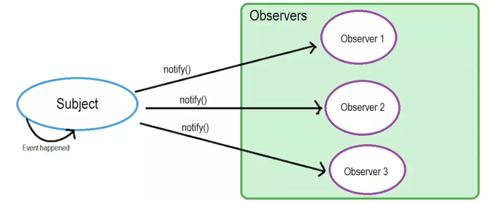
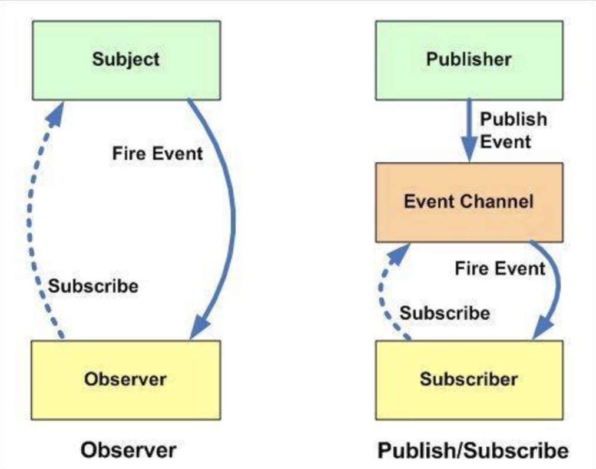

设计模式
观察者设计模式
观察者模式在软件设计中是一个对象，维护一个依赖列表，当任何状态发生改变自动通知它们。

发布-订阅设计模式
在观察者模式中的Subject就像一个发布者（Publisher），观察者（Observer）完全和订阅者（Subscriber）关联。subject通知观察者就像一个发布者通知他的订阅者。这也就是很多书和文章使用“发布-订阅”概念来解释观察者设计模式。但是这里还有另外一个流行的模式叫做发布-订阅设计模式。
在发布-订阅模式，消息的发送方，叫做发布者（publishers），消息不会直接发送给特定的接收者，叫做订阅者。

区别：

- 在观察者模式中，观察者是知道Subject的，Subject一直保持对观察者进行记录。然而，在发布订阅模式中，发布者和订阅者不知道对方的存在。它们只有通过消息代理进行通信。
- 在发布订阅模式中，组件是松散耦合的，正好和观察者模式相反。
- 观察者模式大多数时候是同步的，比如当事件触发，Subject就会去调用观察者的方法。而发布-订阅模式大多数时候是异步的（使用消息队列）。
- 观察者 模式需要在单个应用程序地址空间中实现，而发布-订阅更像交叉应用模式。
Pubsub源码解读
- 在浏览器环境下使用，通过script标签来引入这个类库
- 通过NPM安装使用
- 兼容 ES6(ES2015) 的模块系统、CommonJS 和 AMD 模块规范
(function (root, factory){
'use strict';
var PubSub = {};
//浏览器全局变量(root 即 window)
root.PubSub = PubSub;
var define = root.define;
factory(PubSub);
// AMD support
if (typeof define === 'function' && define.amd){
define(function() { return PubSub; });
// CommonJS and Node.js module support
} else if (typeof exports === 'object'){
if (module !== undefined && module.exports) {
exports = module.exports = PubSub; // Node.js specific `module.exports`
}
exports.PubSub = PubSub; // CommonJS module 1.1.1 spec
module.exports = exports = PubSub; // CommonJS
}
}(( typeof window === 'object' && window ) || this, function (PubSub){
'use strict';
var messages = {},
lastUid = -1;
//hasOwnProperty,判断一个对象是否具有给出名称的属性和对象
function hasKeys(obj){
var key;
for (key in obj){
if ( obj.hasOwnProperty(key) ){
return true;
}
}
return false;
}
/**
* Returns a function that throws the passed exception, for use as argument for setTimeout
* @alias throwException
* @function
* @param { Object } ex An Error object
*/
function throwException( ex ){
return function reThrowException(){
throw ex;
};
}
function callSubscriberWithDelayedExceptions( subscriber, message, data ){
try {
subscriber( message, data );
} catch( ex ){
setTimeout( throwException( ex ), 0);
}
}
function callSubscriberWithImmediateExceptions( subscriber, message, data ){
subscriber( message, data );
}
function deliverMessage( originalMessage, matchedMessage, data, immediateExceptions ){
var subscribers = messages[matchedMessage],
callSubscriber = immediateExceptions ? callSubscriberWithImmediateExceptions : callSubscriberWithDelayedExceptions,
s;
if ( !messages.hasOwnProperty( matchedMessage ) ) {
return;
}
for (s in subscribers){
if ( subscribers.hasOwnProperty(s)){
callSubscriber( subscribers[s], originalMessage, data );
}
}
}
function createDeliveryFunction( message, data, immediateExceptions ){
return function deliverNamespaced(){
var topic = String( message ),
position = topic.lastIndexOf( '.' );
// deliver the message as it is now
deliverMessage(message, message, data, immediateExceptions);
// trim the hierarchy and deliver message to each level
while( position !== -1 ){
topic = topic.substr( 0, position );
position = topic.lastIndexOf('.');
deliverMessage( message, topic, data, immediateExceptions );
}
};
}
function messageHasSubscribers( message ){
var topic = String( message ),
found = Boolean(messages.hasOwnProperty( topic ) && hasKeys(messages[topic])),
position = topic.lastIndexOf( '.' );
while ( !found && position !== -1 ){
topic = topic.substr( 0, position );
position = topic.lastIndexOf( '.' );
found = Boolean(messages.hasOwnProperty( topic ) && hasKeys(messages[topic]));
}
return found;
}
function publish( message, data, sync, immediateExceptions ){
message = (typeof message === 'symbol') ? message.toString() : message;
var deliver = createDeliveryFunction( message, data, immediateExceptions ),
hasSubscribers = messageHasSubscribers( message );
if ( !hasSubscribers ){
return false;
}
if ( sync === true ){
deliver();
} else {
setTimeout( deliver, 0 );
}
return true;
}
/**
* Publishes the message, passing the data to it's subscribers
* @function
* @alias publish
* @param { String } message The message to publish
* @param {} data The data to pass to subscribers
* @return { Boolean }
*/
PubSub.publish = function( message, data ){
return publish( message, data, false, PubSub.immediateExceptions );
};
/**
* Publishes the message synchronously, passing the data to it's subscribers
* @function
* @alias publishSync
* @param { String } message The message to publish
* @param {} data The data to pass to subscribers
* @return { Boolean }
*/
PubSub.publishSync = function( message, data ){
return publish( message, data, true, PubSub.immediateExceptions );
};
/**
* Subscribes the passed function to the passed message. Every returned token is unique and should be stored if you need to unsubscribe
* @function
* @alias subscribe
* @param { String } message The message to subscribe to
* @param { Function } func The function to call when a new message is published
* @return { String }
*/
PubSub.subscribe = function( message, func ){
if ( typeof func !== 'function'){
return false;
}
message = (typeof message === 'symbol') ? message.toString() : message;
// message is not registered yet
if ( !messages.hasOwnProperty( message ) ){
messages[message] = {};
}
// forcing token as String, to allow for future expansions without breaking usage
// and allow for easy use as key names for the 'messages' object
var token = 'uid_' + String(++lastUid);
messages[message][token] = func;
// return token for unsubscribing
return token;
};
/**
* Subscribes the passed function to the passed message once
* @function
* @alias subscribeOnce
* @param { String } message The message to subscribe to
* @param { Function } func The function to call when a new message is published
* @return { PubSub }
*/
PubSub.subscribeOnce = function( message, func ){
var token = PubSub.subscribe( message, function(){
// before func apply, unsubscribe message
PubSub.unsubscribe( token );
func.apply( this, arguments );
});
return PubSub;
};
/**
* Clears all subscriptions
* @function
* @public
* @alias clearAllSubscriptions
*/
PubSub.clearAllSubscriptions = function clearAllSubscriptions(){
messages = {};
};
/**
* Clear subscriptions by the topic
* @function
* @public
* @alias clearAllSubscriptions
*/
PubSub.clearSubscriptions = function clearSubscriptions(topic){
var m;
for (m in messages){
if (messages.hasOwnProperty(m) && m.indexOf(topic) === 0){
delete messages[m];
}
}
};
/**
* Removes subscriptions
*
* - When passed a token, removes a specific subscription.
*
* - When passed a function, removes all subscriptions for that function
*
* - When passed a topic, removes all subscriptions for that topic (hierarchy)
* @function
* @public
* @alias subscribeOnce
* @param { String | Function } value A token, function or topic to unsubscribe from
* @example // Unsubscribing with a token
* var token = PubSub.subscribe('mytopic', myFunc);
* PubSub.unsubscribe(token);
* @example // Unsubscribing with a function
* PubSub.unsubscribe(myFunc);
* @example // Unsubscribing from a topic
* PubSub.unsubscribe('mytopic');
*/
PubSub.unsubscribe = function(value){
var descendantTopicExists = function(topic) {
var m;
for ( m in messages ){
if ( messages.hasOwnProperty(m) && m.indexOf(topic) === 0 ){
// a descendant of the topic exists:
return true;
}
}
return false;
},
isTopic = typeof value === 'string' && ( messages.hasOwnProperty(value) || descendantTopicExists(value) ),
isToken = !isTopic && typeof value === 'string',
isFunction = typeof value === 'function',
result = false,
m, message, t;
if (isTopic){
PubSub.clearSubscriptions(value);
return;
}
for ( m in messages ){
if ( messages.hasOwnProperty( m ) ){
message = messages[m];
if ( isToken && message[value] ){
delete message[value];
result = value;
// tokens are unique, so we can just stop here
break;
}
if (isFunction) {
for ( t in message ){
if (message.hasOwnProperty(t) && message[t] === value){
delete message[t];
result = true;
}
}
}
}
}
return result;
};
}));